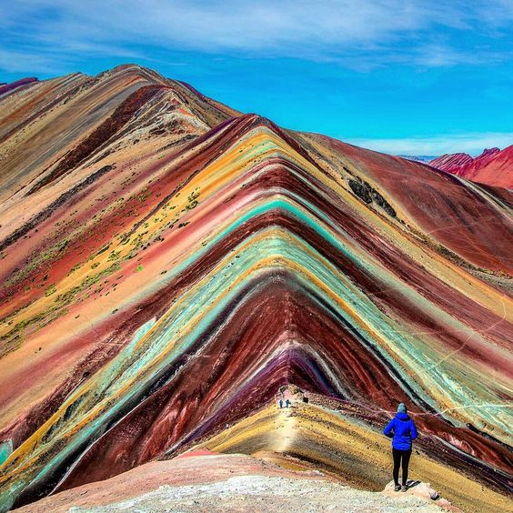
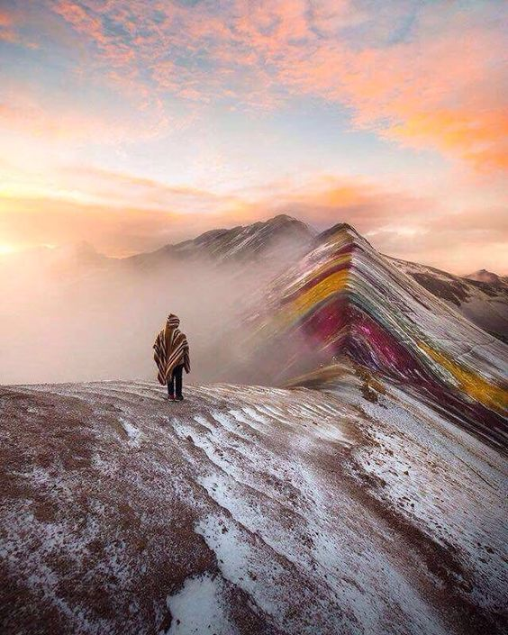
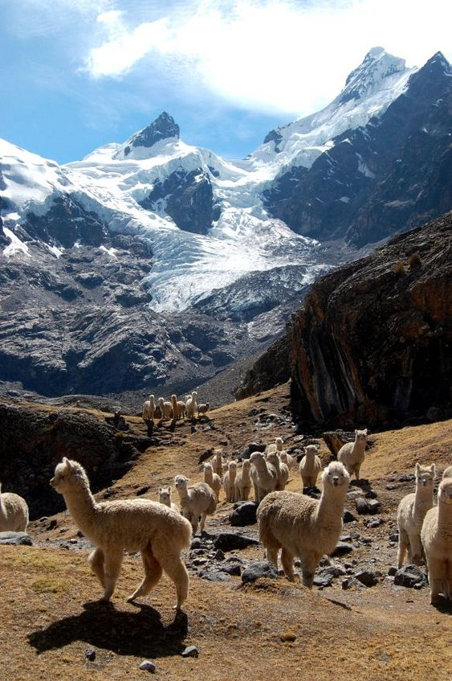

The Rainbow Mountains are a natural wonder, a new wonder of the world that National Geographic included in its “100 Places to Visit in Your Lifetime.” The Rainbow Mountains in Peru are not as famous as those in China and are still a little known tourist destination for those looking for a weekend getaway.

Rainbow Mountain in Peru is located in the Vinicunca Valley in the Andes - this is a whole multi-colored valley in which there are all the colors of the rainbow, in the language of the Quechua Indians descendants of the Incas, Vinicunca means “rainbow mountain”, according to one version, and another version of the name suggests that Vinikunka means “vini” - stone, “kunka” - neck, bottleneck.

The existence of the rainbow mountain became known not long ago; it was revealed to the world because, due to global warming, the snow melted on the mountain and all the beauty of this place was revealed.
The first tourists came to see the Rainbow Mountain Vinicunca in 2016; the tourist route was laid out in such a way that tourists would not go to the mountain itself; this is prohibited, so as not to disturb the natural pattern.
Where are the Rainbow Mountains in Peru?
The Rainbow Mountains are located 100 kilometers from Cusco in the province of Quispicanchis at an altitude of 5200 meters above sea level among snowy peaks and turquoise lagoons. From there there is a magnificent view of the Ausangate glacier - sacred mountain of the Incas, where pilgrims gather every year to celebrate the day of Qoyllur Rit'i.
The journey to the Vincunca Valley to the Rainbow Mountain begins in the ancient Incan city of Cusco. Experienced tourists are advised to stay here for a couple of days for acclimatization, because the path to the Rainbow Mountain is long, and you should prepare for it. You'll have to get up early, at 3 a.m., but it's worth it. On the tourist's path there will be small villages of real Indians in traditional clothes, herds of alpacas grazing peacefully in the valleys. The mountain that tourists and locals seek is hidden in the middle of the glacial mountains in the Vilcanota region of southern Peru.
